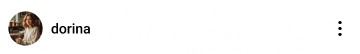
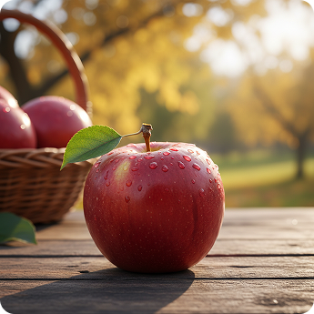
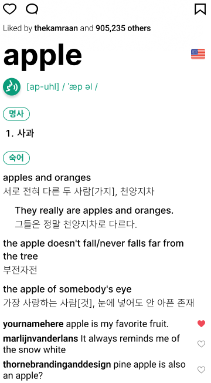
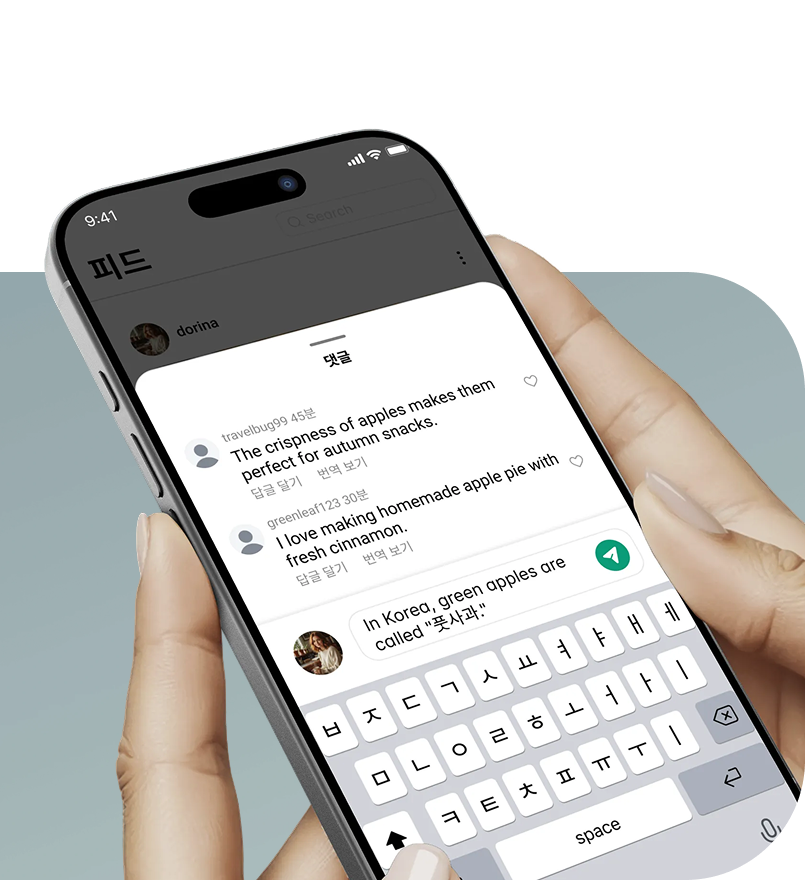

“Speak Your World, Discover Others.”
연구의 배경 및 목적
언어는 사회문화적 맥락을 내포하는 매체로서, '시각적 이미지'를 매개로 할 때 더욱 직관적으로 소통될 수 있다. 비언어적 요소인 이미지, 표정, 몸짓 등 시각적 자극은 텍스트나 음성보다 문화적 뉘앙스를 효과적으로 전달하며(1), 이미지 기반 인터랙션이 결합된 UX 공간은 사용자에게 감각적 체험(본능적 층위)부터 의미 있는 사회적 관계 형성(반성적 층위)까지 다층적 감성 경험을 창출할 수 있다(2).
본 연구는 이미지 매개 상호작용이라는 새로운 소셜 인터랙션 기제가 학습자의 감성 경험에 미치는 영향에 주목한다.
- (1) 박동진·박성은(2024) 비언어적 요소의 언어 소통에 대한 영향력 연구. KCI ART003163539
- (2) 이승연(2012) 사용자 경험을 위한 인터랙션 공간디자인 표현에 관한 연구. KCI ART001690380
LEAP은 '공부가 아니라 놀이처럼 배우기'라는 철학을 가진
이미지 기반 단어 사전을 공유하는 소셜 플랫폼입니다.
디자인
본 연구에서 제안하는 소셜 네트워크 기반 언어 학습 서비스는 AI 기반의 객체·맥락 데이터 분석 기술과 소셜 미디어의 유기적인 인터랙션을 결합하여, 학습자의 자발적 참여와 지속 사용 의도를 향상시키는 것을 목적으로 설계되었다. 본 서비스의 전반적인 사용자 여정 및 인터페이스 흐름은 다음과 같이 네 가지 핵심 단계로 구성된다.



진입 및 메인 홈 화면 탐색 단계
사용자가 앱에 진입하면 최초 학습하고자 하는 목표 언어를 선택하게 된다. 이후 "공부가 아니라 놀이같은 학습"이라는 서비스 철학에 따라, 정형화된 학습 리스트 대신 타 사용자들이 공유한 일상적인 이미지 파일들로 구성된 인스타그램 스타일의 아카이빙 피드가 홈 화면으로 제시된다. 사용자는 스크롤을 통해 피드를 자유롭게 탐색하고 개별 포스팅을 확인할 수 있다.
AI 기반 이미지 매핑 및
단어장 생성 단계
사용자가 하단의 '+' 버튼을 눌러 직접 사진을 촬영하거나 기존 이미지를 로드하면, 생성형 AI 기술이 이미지 내 객체와 맥락을 실시간으로 분석하여 관련 외국어 키워드들을 추출·제시한다. 사용자가 제시된 키워드 중 학습을 원하는 단어를 선택하면, 해당 단어의 사전적 정의, 예문, 그리고 문화적 유래가 유기적으로 정리되며 사용자 개인의 맞춤형 단어장에 자동으로 아카이빙되는 구조를 지닌다.

소셜 상호작용 및 검색 단계
사용자는 개별 피드에 댓글을 작성하여 단어의 실제 쓰임새나 국가별 문화적 차이에 대해 글로벌 유저들과 쌍방향으로 소통할 수 있다. 또한, 검색 기능을 통해 특정 키워드로 포스팅된 다채로운 일상 이미지 피드들을 한눈에 확인하며 다양한 언어적 맥락을 파악할 수 있다.
행동 유도 푸시 알림 단계
시스템은 서비스 사용 중간에 두 가지 유형의 자발적 행동 유도 알림을 송신한다. 첫 번째는 “지금 주변은 어떤 모습인가요?”, “오늘 하루의 단어를 채워보세요!”와 같이 사용자의 일상 아카이빙 및 콘텐츠 생산을 독려하는 알림이며, 두 번째는 “다른 사람의 피드에 댓글을 달아주세요”와 같이 타 유저와의 소셜 인터랙션을 밀착 유도하는 알림이다.